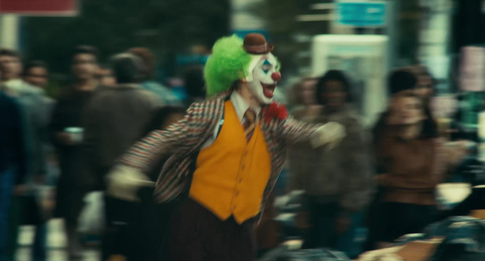
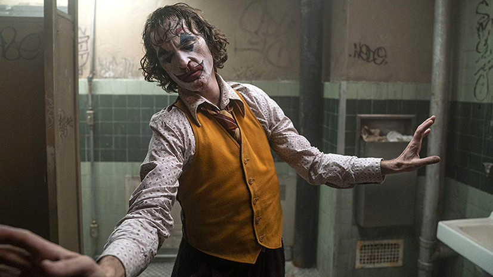
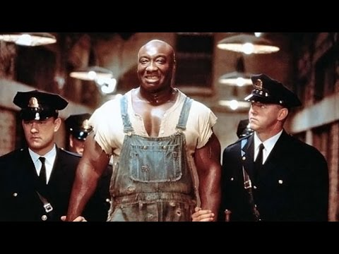
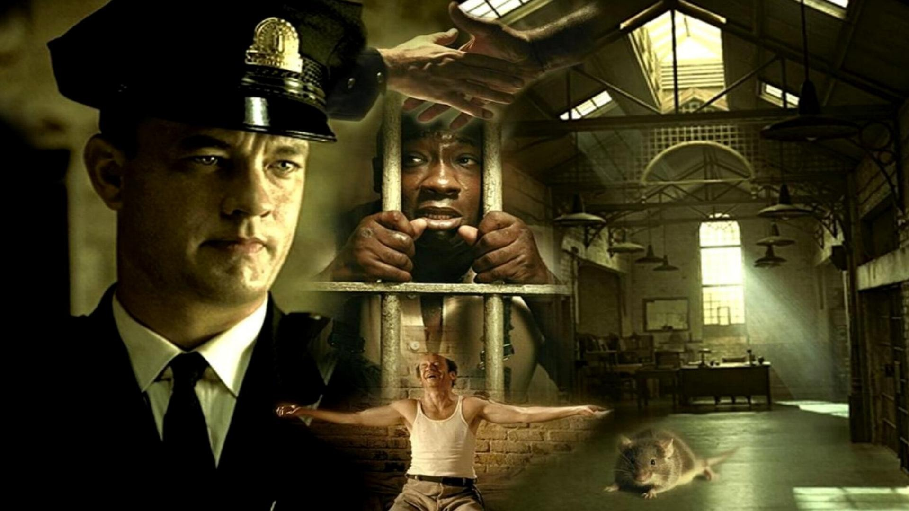
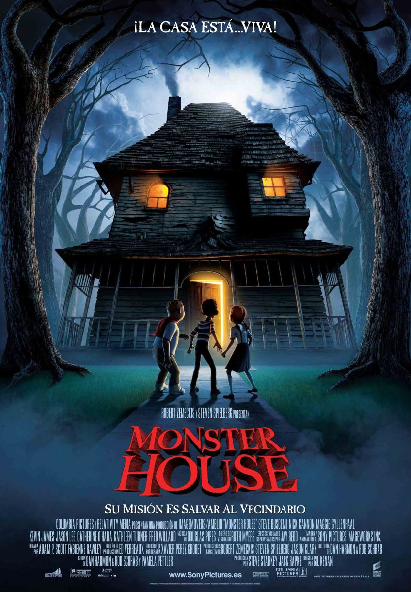
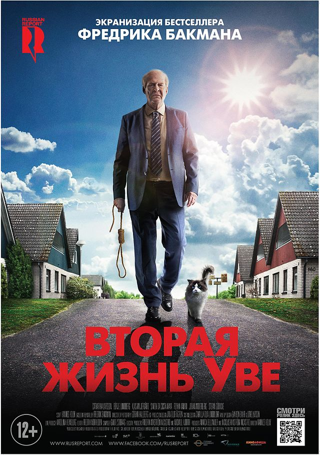

Готэм, начало 1980-х годов. Комик Артур Флек живет с больной матерью, которая с детства учит его «ходить с улыбкой». Пытаясь нести в мир хорошее и дарить людям радость, Артур сталкивается с человеческой жестокостью и постепенно приходит к выводу, что этот мир получит от него не добрую улыбку, а ухмылку злодея Джокера.



Пол Эджкомб — начальник блока смертников в тюрьме «Холодная гора», каждый из узников которого однажды проходит «зеленую милю» по пути к месту казни. Пол повидал много заключённых и надзирателей за время работы. Однако гигант Джон Коффи, обвинённый в страшном преступлении, стал одним из самых необычных обитателей блока.




